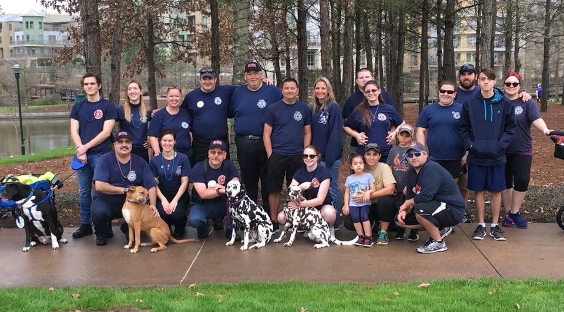

Growing up, I had an interest in contributing to my community. My father is a part-time firefighter at Cy-Fair Fire Department and he helped teach me the value in helping those in need. Throughout high school, I would regularly volunteer with the fire station and was formally trained and am CPR certified. I also would regularly participate in suicide-prevention marathons to help raise awareness. Life guarding was also another way that I felt that I contributed to my community- making sure the public was able to safely enjoy time with their loved ones at the pool.
